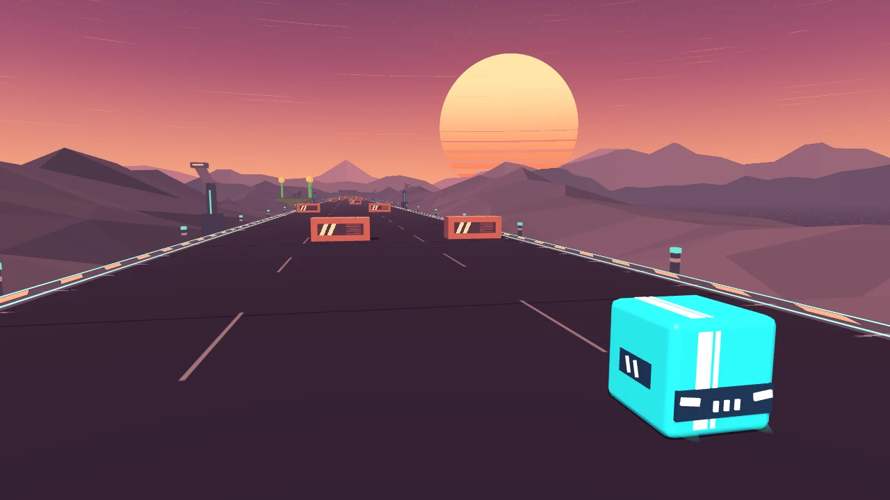
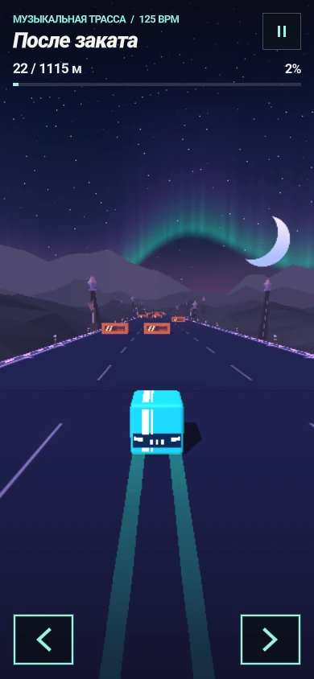

THE GAME
Преврати свою музыку в трассу. Веди куб двумя пальцами или испытай себя в десяти заездах кампании.
Играть в браузереМузыкальная
трасса
Ударные задают препятствия, энергия фразы меняет ширину дороги. Выбери демо или композицию на телефоне. Игра разбирает звук прямо на устройстве.
MP3, Ogg Vorbis или WAV · от 6 секунд до 10 минут · до 64 МиБ


Два кубка.
Десять трасс.
В «Классике» — пять трасс из оригинальной игры. В кубке «Новые трассы» дорога раздваивается и сужается до моста. Начни с любого кубка. Каждый финиш открывает следующую трассу.


Управление
Тормози перед узким проходом и отпускай тормоз на прямой. На сенсорном экране рули стрелками слева, а тормози кнопкой справа.
В настройках есть три уровня скорости. Лучшее время на каждой сложности сохраняется отдельно.
| Действие | Клавиатура | Геймпад |
|---|---|---|
| Рулить | A D / ← → | Левый стик, крестовина |
| Тормоз | Пробел / S | LT / L2 |
| Пауза | Esc / P | Start / Options |
| Повтор | R | Y / △ |